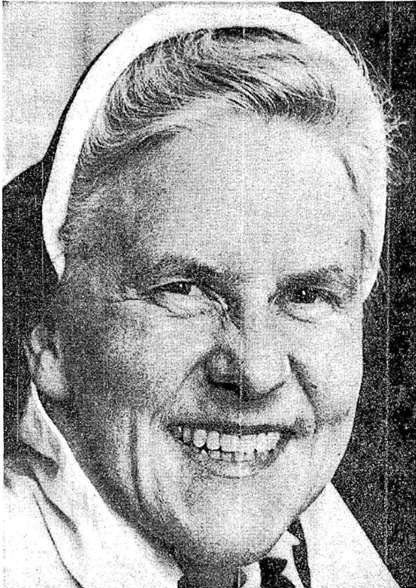
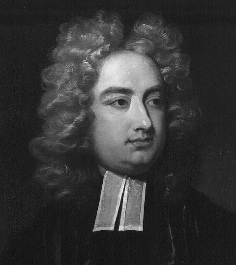
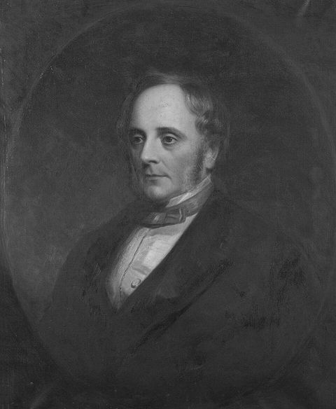
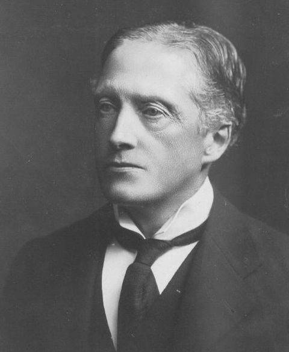
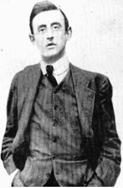
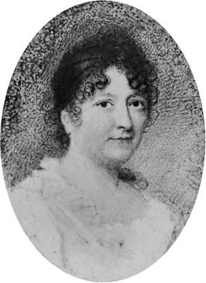
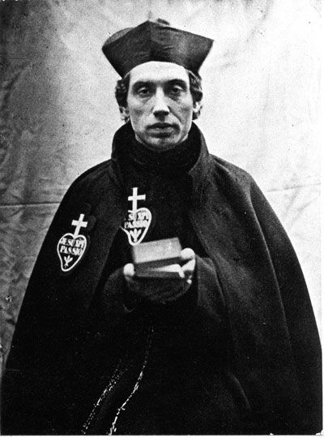
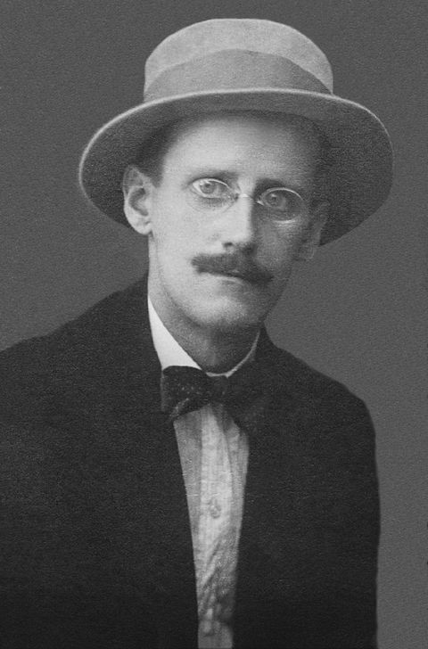

Sister Ann Dominica Fitzgerald
died 2006 · The first Poddleologist



A Dominican nun from Blackrock who taught at Muckross Park in Donnybrook, Sister Ann made the Poddle her cause. She traced it on foot through the Liberties, falling in twice along the way, photographed stretches that were about to vanish, and argued that its meeting with the Liffey formed the Dubh Linn that gave the city its name. She coined the word “Poddleologist” for anyone who follows the river.
In the early 1970s she campaigned against the building over of the City Watercourse at Templeogue, frustrated by what she saw as apathy and poor planning, and won the support of Seán Rothery, chairman of An Taisce. She wrote the narration for John Gleeson’s 16mm film of the watercourse, led walks along the river for the 1973 Dublin Arts Festival, and wrote “Down the Old Poddle” for The Liberties of Dublin (1973). She died on 10 March 2006.
On poddle.ie: Saving the watercourse · “An underground river!” · Willington and the watercourse · Her walk to Warrenmount
Jonathan Swift
1667–1745 · Dean of St Patrick’s, on the river’s island


Swift was Dean of St Patrick’s from 1713 until his death, in a cathedral built on an island between two streams of the Poddle, with the water a few feet beneath its floor. He opposed a plan to crown its tower with a brick spire. One account says the Poddle Guard was set up in 1725 to stop him rousing the crowds of the Liberties against the government; others say it simply policed the rough ground by the cathedral. He left most of his fortune to found St Patrick’s Hospital, which still cares for patients today.
On poddle.ie: A cathedral on wet ground · The Poddle Guard
Sir Benjamin Lee Guinness
1798–1868 · Restored St Patrick’s on its island


Arthur Guinness’s grandson ran the brewery and was Lord Mayor of Dublin in 1851. Between 1860 and 1865 he paid for the great restoration of St Patrick’s Cathedral, when it was feared the building, standing on wet ground between two streams of the Poddle, might collapse. His statue stands outside the cathedral.
On poddle.ie: Out of sight · The Guinness family by the Poddle
Lord Iveagh (Edward Cecil Guinness)
1847–1927 · Rebuilt the Poddle valley


The third son of Sir Benjamin Lee Guinness, Edward Cecil Guinness ran the brewery and was made Lord Iveagh in 1891. Around 1900 the streets between St Patrick’s and Bride Street, the “Poddle valley”, were some of the worst slums in the city, with houses sinking into the river beneath them. Lord Iveagh cleared them and laid out St Patrick’s Park, opened in 1902, and his Iveagh Trust built the Bull Alley flats (1901 to 1906), the Iveagh Hostel and the Iveagh Baths on Bride Road (1906), and the Iveagh Play Centre (1915). He also paid for the Iveagh Markets on Francis Street.
The Corporation moved part of the river to give the new buildings firm ground, and in 1902 thanked him for a gift of £1,400 towards completing the new channel from the cathedral to where the two branches met. During the works of 1901 the old carved stone thought to mark St Patrick’s Well was found in the culvert beside the cathedral.
On poddle.ie: Out of sight · The Iveagh Buildings · St Patrick’s Well · The Guinness family by the Poddle · Guinness workers at Blackpitts
The Plunketts
1914–1916 · Larkfield and the Kimmage Garrison


Countess Plunkett held the lease of Larkfield, the old mill on the Poddle by Sundrive Road, and her sons, Joseph Mary Plunkett among them, made it a base for the Volunteers: a store for the Howth guns of 1914 and, before Easter 1916, home to the Kimmage Garrison. Joseph Mary Plunkett signed the Proclamation and was executed after the Rising.
On poddle.ie: Larkfield Mill and the Kimmage Garrison · Mill country
Mary Aikenhead
1787–1858 · Founded the Hospice on the river


Founder of the Religious Sisters of Charity and of St Vincent’s Hospital, she bought Greenmount at Harold’s Cross in 1845, on the banks of the Poddle, and made it the congregation’s mother house. Our Lady’s Hospice grew from it.
On poddle.ie: Our Lady’s Hospice · Greenmount and the Hospice
Saint Charles of Mount Argus
1821–1893 · The healer by the river


Charles Houben, a Dutch Passionist, came to the new monastery at Mount Argus in 1857, where the Poddle ran through the grounds. Crowds came to him for healing. He was canonised in 2007.
On poddle.ie: Saint Charles · The first Mount Argus
James Joyce
1882–1941 · Put the Poddle in Ulysses


Joyce gave the river a sentence in Ulysses, misplacing its mouth at Wood Quay: “Poddle river hung out in fealty a tongue of liquid sewage.”
On poddle.ie: Ulysses
Red Hugh O’Donnell
1572–1602 · Escaped from Dublin Castle by the river
Heir to the O’Donnells of Tír Chonaill, Red Hugh was kidnapped at fifteen in 1587, lured aboard a ship at Rathmullan, and held in Dublin Castle as a hostage. A first escape in 1590 failed. At Christmas 1591 he and Henry and Art O’Neill got free of their fetters, let themselves down by a rope into the Poddle where it ran under the Castle, crossed the moat and fled into the Wicklow mountains in deep snow. Art O’Neill died of cold, and Red Hugh lost his big toes to frostbite before the O’Byrnes of Glenmalure brought them to safety. He went on to lead the Nine Years’ War with Hugh O’Neill.
On poddle.ie: The moat and the escape
The Domvilles of Templeogue
1688–1768 · Held the city’s water to ransom
Sir Thomas Domville took Templeogue House after the Talbots lost it in 1688, and with it control of the City Watercourse that crossed his land. His son Sir Compton Domville made the watercourse the centrepiece of his gardens, and is remembered for using it as a weapon: when his nephew Lord Santry was condemned for killing a tavern porter in 1739, Sir Compton is said to have threatened to cut off the city’s water unless Santry was spared. Santry was pardoned. The story is famous, though how much the threat decided it is debated.
On poddle.ie: Guarding the water · Templeogue House
John Le Decer
mayor 1302–1324 · The mayor who built the city’s fountain
Six times mayor of Dublin (1302, 1305, 1307 to 1309 and 1324), Le Decer paid for public works himself. In 1308 he had the watercourse cleaned and faced with stone, and built a marble cistern at Cornmarket, by St Audoen’s, fed from the City Watercourse. People called it Le Decer’s fountain, or the High Pipe. Tradition says he set the “Lucky Stone”, an early grave slab, beside it, and that whoever drank there had good luck.
On poddle.ie: Rebuilding the watercourse · Water for the city
Arthur Guinness
1725–1803 · Brewed with the City Watercourse
On 31 December 1759 Arthur Guinness took a lease of the disused brewery at St James’s Gate from Mark Rainsford, for 9,000 years at £45 a year. The lease gave him free use of “the said Pipe water or City Water Course”, the water the City Watercourse carried down from the Dodder and the Poddle to the City Basin beside the brewery.
When Dublin Corporation came with the Sheriff in May 1775 to fill in his channel, he took a pickaxe from one of the workmen and told them the water was his and he would defend it. The quarrel ended in a compromise in the mid-1780s, when he agreed to pay £10 a year for the water.
On poddle.ie: Arthur Guinness’s lease · The pickaxe, 1775 · The City Basin
George Carr Shaw
1814–1885 · The playwright’s father, a reluctant miller
Born in Kilkenny, a civil servant who sold his pension for £500 and went into the flour trade, George Carr Shaw ran Rutland mill on the City Watercourse with his partner Clibborn. His son, George Bernard Shaw, described a business that “did not work the industry: it worked them”, and his father laughing helplessly in an empty corner of the warehouse after a customer’s bankruptcy all but ruined them. The mill kept him until he died in 1885.
On poddle.ie: Shaw’s mill, Rutland Avenue · The mills
Sir Frederick Shaw
1799–1876 · Recorder of Dublin, at Kimmage
Recorder of Dublin from 1830 to 1876 and MP for the city and then Dublin University, Shaw lived at Kimmage House, on the Poddle, from 1829 until he died. He remodelled it in the Tudor style, built Whitehall Road as its new approach, and married Thomasina Emily Jocelyn, a granddaughter of the Earl of Roden. His granddaughter Flora Shaw named Nigeria.
On poddle.ie: Frederick Shaw · From Kimmage House to Kimmage Manor
Archbishops Comyn and de Loundres
1181–1228 · Built on the river’s island
John Comyn, the first Norman archbishop of Dublin, built his palace of St Sepulchre beside the Poddle and made the little church on its island collegiate in 1191. His successor, Henry de Loundres, raised it to a cathedral, and was granted the manor of Tymon by King John in 1216.
On poddle.ie: A cathedral on wet ground · St Sepulchre’s Palace · Tymon estate
The Pims
19th century · Quaker mill owners at Greenmount
The Quaker Pim family, Thomas, Jonathan and Joseph Robinson Pim of Pim Brothers, enlarged the Greenmount mill on the Poddle into the Greenmount Spinning Company, making cotton, linen and Irish poplin, and were known for their work for better conditions and charity.
On poddle.ie: Greenmount
Mary Agnes Hammond
died 1956 · Landlady with washing rights in the Poddle
Daughter of the builder Arthur Hammond, she inherited 150 houses around Blackpitts in 1902, many let to Guinness workers, with the right to wash in the River Poddle written into the deeds. She is remembered as a British spy during and after the First World War.
On poddle.ie: Washing rights in the Poddle
Zozimus (Michael Moran)
c. 1794–1846 · The blind rhymer of the Liberties
The street balladeer Michael Moran, known as Zozimus, was born in Faddle Alley off Blackpitts and died in Patrick Street, both on the river’s course. A play about him, Zoz, was staged at the Olympia, over the Poddle, in 1975.
On poddle.ie: Through the Liberties
Dan Lowrey
1879 · Built a music hall over the river
Dan Lowrey opened the Star of Erin music hall on Dame Street in 1879, now the Olympia. The Poddle beneath it decided where the stage went and why the audience still comes in through a tunnel.
On poddle.ie: The Olympia and the river
Spencer Harty
City Surveyor, 1890s–1900s · The engineer who found St Patrick’s Well
As Dublin’s Borough Surveyor, Harty dealt with the open river at Donore Avenue and rebuilt the culverts in the Liberties. In June 1901, opening the old arched course of the Poddle in Patrick Street, he found the stone marking St Patrick’s Well.
On poddle.ie: Donore Avenue, 1901 · Between two streams
Parts of this page draw on research by the volunteers of the Crumlin and Walkinstown History Group, shared with poddle.ie. About their research.